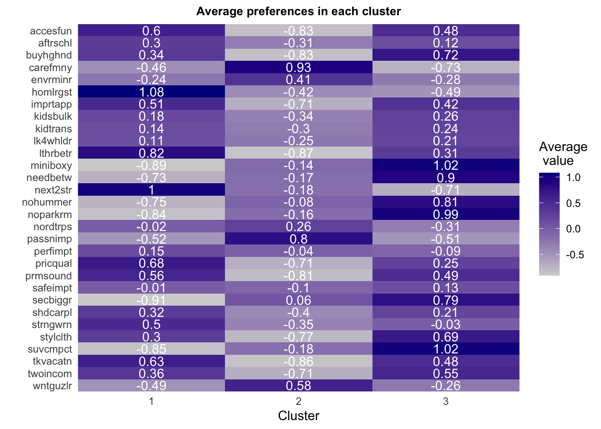

Eigenvalues
# correlation analysis without mvliking
cor<- cor(vars[,-1])
EV = eigen(cor)$values
EV_df = EV %>%
# convert to df
as.data.frame()%>%
# name column
dplyr::rename(., "Eigen Value" =".") %>%
# add a column "Factor"
dplyr::mutate(Factor = seq(1,length(EV))) %>%
# order columns
dplyr::select(Factor, everything()) %>%
# add a column "Variance"
dplyr::mutate(`Variance %` = EV/length(EV) *100) %>%
dplyr::mutate(`Cumulative Variance % ` = cumsum(EV/length(EV))* 100) %>%
dplyr::mutate(., across(where(is.numeric), round, 1))
rmarkdown::paged_table(EV_df )
Scree Plot
psych::scree(cor, pc = TRUE, factors = FALSE)

Cumulative Percentages of Variance
# Shares for the cumulative variance explained
plot(cumsum(EV/length(EV)),
type = "o", # type of plot: "o" for points and lines 'overplotted'
col = "darkblue",
pch = 16, # plot symbol: 16 = filled circle
cex = 1, # size of plot symbols
xlab = "Number of factors", # a title for the x axis
ylab = "Cumulative variance explained", # a title for the y axis
lwd = 2) # line width
abline(v = 5, lwd = 2, col = "grey") # draw a vertical line at v = 3

Select Number of Factors using Kaiser Rule
nFactor <- length(which(EV > 1))
print(paste0(nFactor, " factors with Eigenvalue > 1" ))
## [1] "5 factors with Eigenvalue > 1"
Factor Loadings
options(digits = 2)
columnOrder <- c("PA1", "PA2", "PA3", "PA4","PA5","Communality","Uniqueness")
EFA_loadings <- data.frame(EFA$loadings[,]
) %>%
dplyr::mutate(Uniqueness = EFA$uniquenesses,
Communality = EFA$communality) %>%
dplyr::mutate(., across(where(is.numeric), round, 2)) %>%
dplyr::select(columnOrder) %>%
arrange(., -Communality)
## Note: Using an external vector in selections is ambiguous.
## ℹ Use `all_of(columnOrder)` instead of `columnOrder` to silence this message.
## ℹ See <https://tidyselect.r-lib.org/reference/faq-external-vector.html>.
## This message is displayed once per session.
# a function to highlight cells value > 0.5 or < -0.5
colorCell <- function(x, n, nmax){
cell_spec(x, background = ifelse(is.na(as.numeric(x)), "white",
ifelse(n == nmax | n == 1, "white",
ifelse(abs(x) >=0.5, "lightgreen",
ifelse(x < 0.5, "white", "white")))))
}
# show table in rMarkdown
EFA_loading_table = EFA_loadings %>%
mutate_all(funs(colorCell(.,
n = row_number(),
nmax = n()))) %>%
kable(escape = FALSE) %>%
kable_styling(bootstrap_options = "striped", full_width = F, position = "center")
## Warning: `funs()` was deprecated in dplyr 0.8.0.
## Please use a list of either functions or lambdas:
##
## # Simple named list:
## list(mean = mean, median = median)
##
## # Auto named with `tibble::lst()`:
## tibble::lst(mean, median)
##
## # Using lambdas
## list(~ mean(., trim = .2), ~ median(., na.rm = TRUE))
## This warning is displayed once every 8 hours.
## Call `lifecycle::last_lifecycle_warnings()` to see where this warning was generated.
paged_table(EFA_loadings)